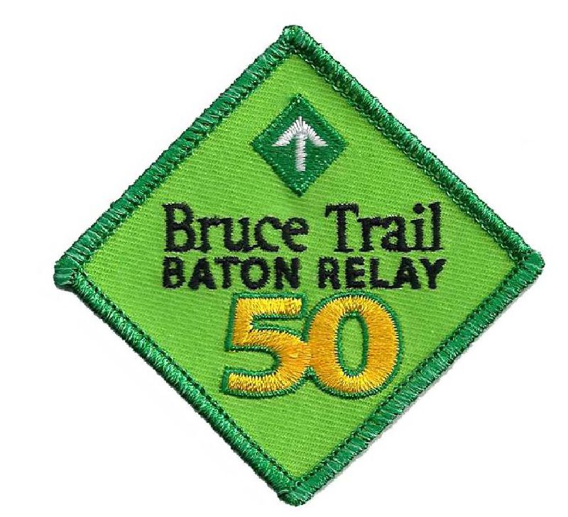

The Bruce Trail turned 50 years old in 2017! To help celebrate our 50th Anniversary, in April and May the BTC relayed a ceremonial 50th Anniversary Baton along the entire length of the Trail, from Niagara to Tobermory. The baton was carried by over 550 volunteers along its journey!
All volunteers who carried the baton for at least 2 km received the Bruce Trail 50th Anniversary Baton Relay Badge.
For photos of the 50th Anniversary Baton Relay in the Sydenham section, check our Photo Gallery.